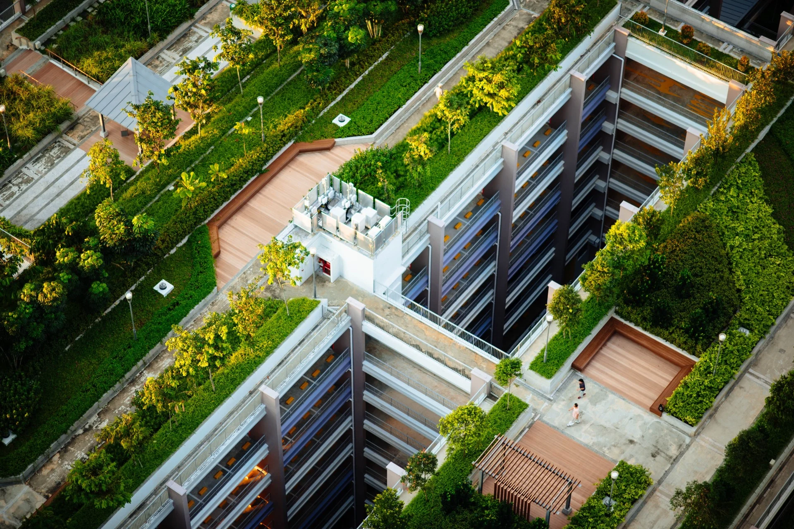

Green Infrastructure represents paradigm shift in Civil Engineering, moving away from 'grey engineering' - relying on concrete, steel, and pipes - to 'nature-based solutions'. It is an engineering framework that uses soil, vegetation and natural hydrologic processes to manang water and create healthier urban environments. By integrating features like bioswales, permeable pavements, and green roofs we treat stormwater as a resource to be harvested and filtered rather than a waste product to be hidden underground. This approach mimics the natural water cyle, allowing for infiltration and evapotranspiration in the heart of our built environment.

Beyong meer drainage, green infrastructure serves as a multi-functional asset for modern cities. Unline a standard drainage pipe that serves a single purpose, green systems provides "co-benefis" that enhance the quality of urban life. These projects improve local air quality, create habitats for urban biodiversity, and provide aesthetic green spaces for the community. For a Civil Engineer, green infrastructure is about designing systems that don't just withstand the environment, but work in harmony with it to create more resilient and livable urban centers.
To bring these concepts into the realm of practical site development, engineers must transition from high-velocity "conveyance" to strategic "detention and infiltration." In a typical urban layout, this means replacing traditional concrete curbs and gutters with bioswales—engineered depressions filled with specialized soil media and salt-tolerant vegetation. Instead of directing runoff immediately into a storm sewer, these systems slow the water down, allowing sediment to settle and pollutants to be naturally filtered by plant roots. Similarly, replacing standard asphalt with permeable pavement turns a parking lot into a giant filter; the structural stone reservoir beneath the surface provides temporary storage, reducing the "peak flow" that often overwhelms municipal systems during heavy rain events.
From a long-term asset management perspective, the shift to green infrastructure requires a different maintenance mindset. While a buried pipe is "out of sight, out of mind" until it fails, green systems are living assets that require periodic weeding, sediment removal, and vegetation health checks. However, this trade-off is often offset by the extended lifespan of the surrounding "grey" infrastructure. For example, green roofs protect the underlying waterproof membrane from UV radiation and extreme thermal expansion, potentially doubling the life of the roof. By treating the entire site as a sponge rather than a slide, civil engineers can reduce the size and cost of downstream drainage infrastructure, ultimately creating a more cost-effective and climate-resilient urban footprint.